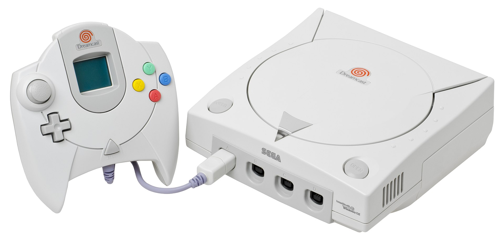
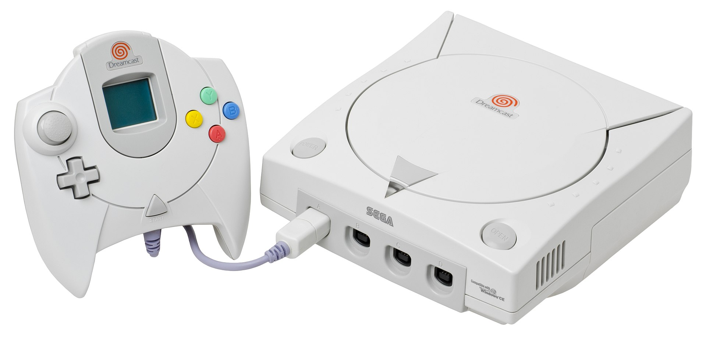

Mega Drive
O Sega Mega Drive (conhecido como Sega Genesis na América do Norte) é um console de videogame doméstico de 16 bits desenvolvido pela Sega, lançado pela primeira vez no Japão em 1988 e depois em outras regiões ao longo de 1989 e 1990. Foi uma parte importante da quarta geração de consoles de videogame, competindo diretamente com o Super Nintendo Entertainment System (SNES) da Nintendo. O Mega Drive se tornou bem conhecido por sua impressionante biblioteca de jogos, incluindo sucessos como Sonic the Hedgehog , Streets of Rage e Golden Axe.
Master System
O Master System foi um console de videogame de 8 bits produzido pela Sega para competir com o Nintendo Entertainment System (NES). Foi lançado no Japão em 1985 e depois na América do Norte e Europa. O Master System era conhecido por seus gráficos impressionantes e capacidades sonoras, assim como sua biblioteca de jogos populares, incluindo, Alex Kidd in Miracle World e Phantasy Star. No entanto, ele nunca atingiu o mesmo nível de sucesso que o NES na América do Norte. O Master System é considerado um console clássico e ainda é apreciado por jogadores retrô hoje em dia. Ele tem um lugar especial no coração de muitos que cresceram jogando, e continua sendo uma parte significativa da história dos videogames.
Super Nintendo
O Super Nintendo Entertainment System (SNES) , também conhecido como Super Famicom no Japão, é um console de videogame de 16 bits lançado pela Nintendo. Lançado em 1990 no Japão e 1991 na América do Norte, o SNES foi o segundo console doméstico da Nintendo, seguindo o Nintendo Entertainment System (NES) original. Conhecido por seu icônico design cinza com botões coloridos nas versões japonesa e europeia (botões roxos e lilás na América do Norte), o SNES trouxe gráficos, som e experiências de jogabilidade aprimorados em comparação ao seu antecessor. O SNES tem uma das bibliotecas de jogos mais queridas, incluindo Super Mario World , The Legend of Zelda: A Link to the Past , Donkey Kong Country.
Nintendo64
O Nintendo 64 foi um console de videogame de quinta geração lançado pela Nintendo em 1996. Marcado por gráficos 3D mais avançados do que seus concorrentes da época, o N64 deixou sua marca na indústria e conquistou o coração de milhões de jogador. O design do Nintendo 64 era único, com formato de diamante e controles analógicos que revolucionaram a forma como os jogadores interagiam com os jogos. O controle, com seus botões coloridos e o stick analógico central, proporcionava uma experiência de jogo mais intuitiva e precisa. Alguns destaques de Jogos icônicos do N64 como: GoldenEye 007, Super Mario, Mario Kart, Donkey Kong.
Dreamcast
O Dreamcast foi um console inovador lançado pela Sega em 1998. Ele estava à frente de seu tempo, oferecendo recursos inovadores e um forte foco em jogos online, as Principais características como: Hardware avançado, a Unidade de Memória Visual (VMU), permitia periférico exclusivo e servia tanto como um cartão de memória quanto como um dispositivo de jogo portátil, expandindo a versatilidade do console. Com sua biblioteca de jogos diversificada com títulos aclamados pela crítica como Shenmue, Phantasy Star Online, Crazy Taxi e Sonic Adventure.